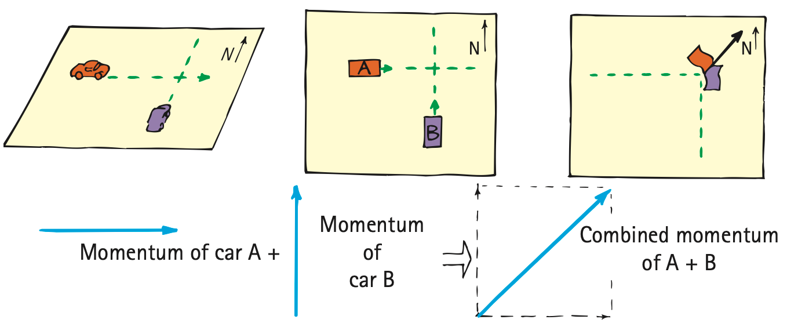

More Complicated Collisions
The net momentum remains unchanged in any collision, regardless of the angle between the paths of the colliding objects. The net momentum when different directions are involved can be expressed with the parallelogram rule of vector addition. We will not treat such complicated cases in great detail here, but we’ll show some simple examples to convey the concept.
In Figure 6.18, we see a collision between two cars traveling at right angles to each other. Car A has a momentum directed due east, and car B’s momentum is directed due north. If their individual momenta are equal in magnitude, then their combined momentum is in a northeasterly direction. This is the direction the coupled cars will travel after collision. We see that, just as the diagonal of a square is not equal to the sum of two of the sides, the magnitude of the resulting momentum does not simply equal the arithmetic sum of the two momenta before the collision. Recall the relationship between the diagonal of a square and the length of one of its sides (see Figure 2.9 in Chapter 2)—the diagonal is √2 times the length of the side of a square. So, in this example, the magnitude of the resultant momentum will be equal to √2 times the momentum of either vehicle.


Figure 6.20 shows a falling firecracker exploding into two pieces. The momenta of the fragments combine by vector addition to equal the original momentum of the falling firecracker. Figure 6.19b extends this idea to the microscopic realm, where the tracks of subatomic particles are revealed in a liquid hydrogen bubble chamber.

Whatever the nature of a collision or however complicated it is, the total momentum before, during, and after remains unchanged. This extremely useful law enables us to learn much from collisions without any knowledge of the forces that act in the collisions. We will see, in the next chapter, that energy, perhaps in multiple forms, is also conserved. By applying momentum and energy conservation to the collisions of subatomic particles as observed in various detection chambers, we can compute the masses of these tiny particles. We obtain this information by determining momenta and energy before and after collisions.
Conservation of momentum and conservation of energy (which we will cover in the next chapter) are the two most powerful tools of mechanics. Applying them yields detailed information that ranges from facts about the interactions of subatomic particles to the structure and motion of entire galaxies.